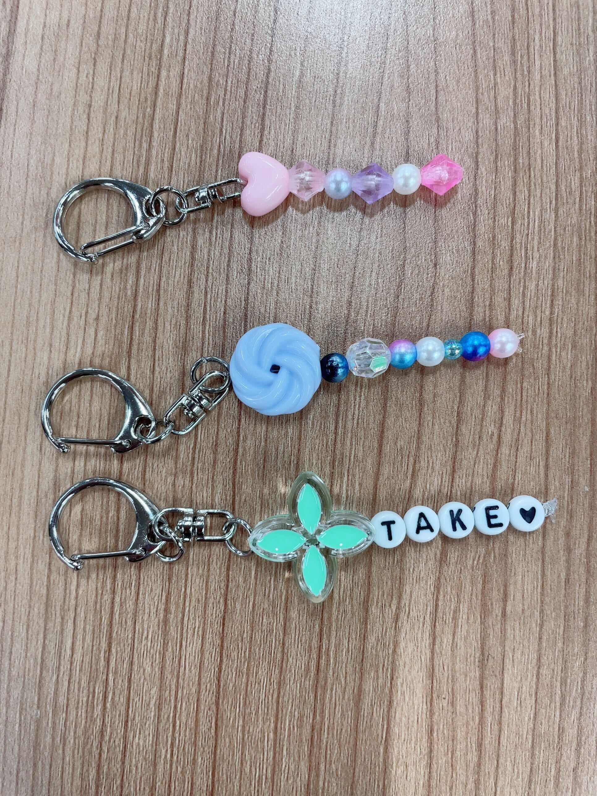

Campus Festival
WorkShop
大トロ（カマトロ横）
好きなパーツを選んで、世界に一つだけのオリジナルキーホルダーを作れます！ 今日１日の思い出に、１つ作ってみてはいかがですか？

キーホルダー
小さめでかわいい、どこにでもつけられるキーホルダーです
¥100
— FROM: UNKNOWN X —
先ほど、私がキャンフェスに関するさまざまなデマをSNSに流した。 止めたければ、キャンフェス会場に仕掛けた謎をすべて解き明かして、 導かれた言葉を専用サイトに入力し、私の元へたどりついてみたまえ。